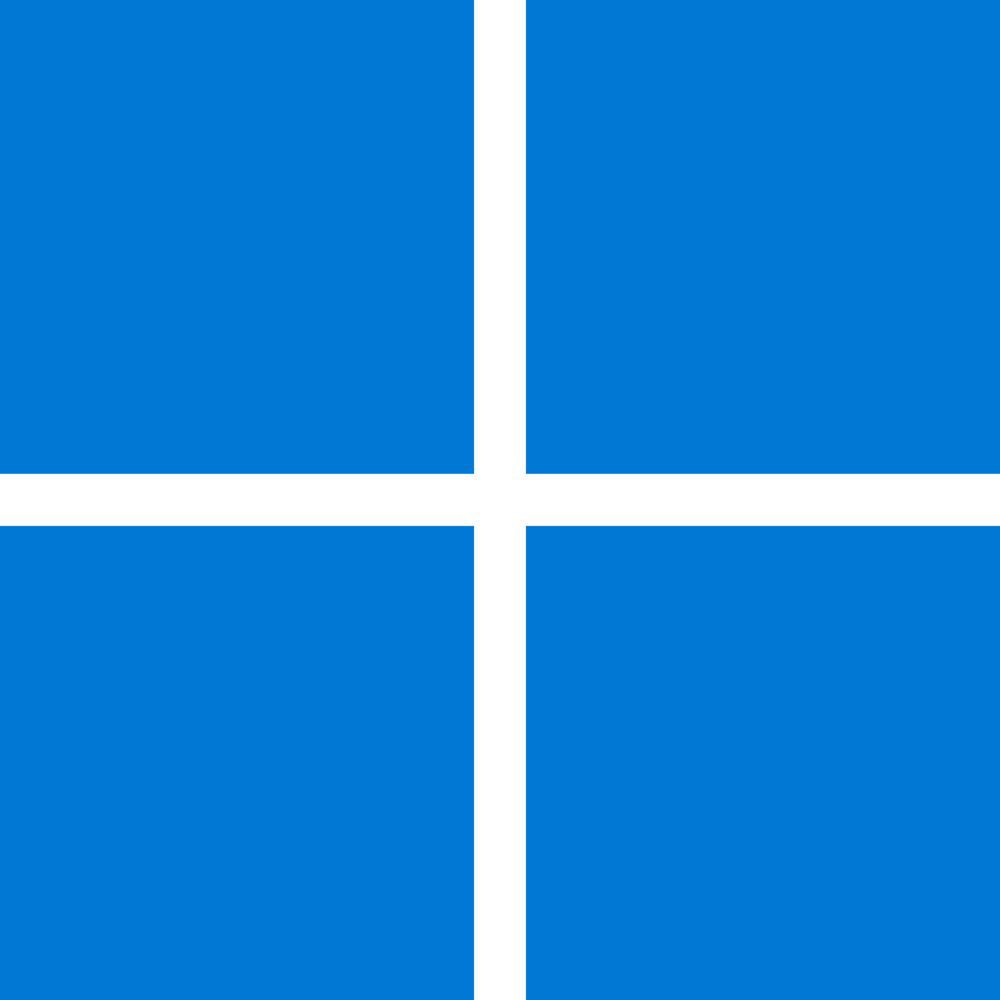

Редактор кода
Подсветка синтаксиса, дерево файлов и вкладки. Проекты открываются прямо из памяти телефона через системный выбор папки.
МОБИЛЬНАЯ IDE С ИИ-АГЕНТОМ
NotCode — редактор кода, ИИ-агент, Git и Linux-окружение в одном приложении для Android. Работает с вашим API-ключом и вашим провайдером — без посредников и лишних разрешений.

Windows скороПОСЛЕДНИЙ РЕЛИЗ
Первый релиз уже готовится — следите за анонсами.
Внутри NotCodeРедактор кодаИИ-агентGitLinux-терминалСвой API-ключ
Всё, что нужно, чтобы довести задачу до коммита, не открывая ноутбук.
Подсветка синтаксиса, дерево файлов и вкладки. Проекты открываются прямо из памяти телефона через системный выбор папки.
Агент читает и правит файлы, ищет по проекту, работает с Git и терминалом. Каждая запись показывается как diff, каждая команда — с подтверждением.
Статус, diff, коммиты, ветки, pull и push — без сторонних приложений. Учётные данные хранятся в защищённом хранилище Android.
Опциональный терминал с Ubuntu внутри приложения: собирайте проект и запускайте тесты. Образ скачивается один раз и проверяется по контрольной сумме.
Любой OpenAI-совместимый провайдер: OpenRouter, DeepSeek, Groq, свой сервер с Ollama. Запросы идут напрямую, без нашего сервера посередине.
Ключ не покидает устройство и недоступен модели. Никакой телеметрии и аккаунтов. Что именно видит провайдер — всегда прозрачно.
Идеи не ждут, пока вы сядете за ноутбук. Телефон всегда с собой — и нам хотелось, чтобы в нём был настоящий инструмент разработчика, а не блокнот с подсветкой.
NotCode делает команда — без корпорации и инвесторов. Поэтому здесь нет навязчивых подписок и «облака, которое знает о вас всё»: вы приносите свой ключ, выбираете провайдера и решаете, что агенту можно делать с проектом. Код приложения открыт — можно проверить каждое обещание на этой странице.
Если проект вам близок, заглядывайте в Telegram — там ход разработки без прикрас. А поддержать выход новых версий можно на Boosty.
— команда NotCode
Скачивайте последний релиз напрямую с GitHub. Android 8.0 и новее, установка в пару шагов.
СКОРО Перейти к скачиванию →Официальная витрина NotCode. Скоро приложение появится в RuStore — с удобными обновлениями прямо из магазина.
СКОРОВерсия для ПК в планах: тот же агент и инструменты, но с большим экраном и привычной клавиатурой.
СКОРОНовости и ход разработки — в Telegram. Поддержать проект и помочь ему расти — на Boosty. Исходный код — на GitHub.